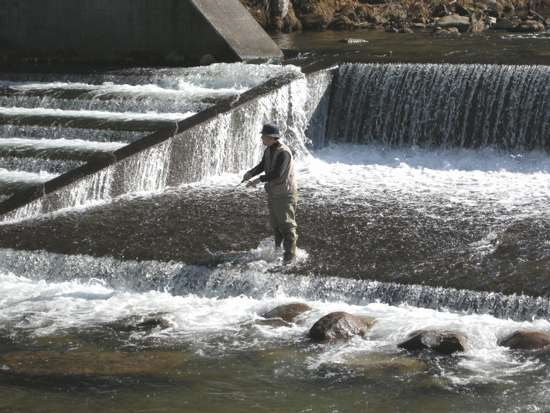
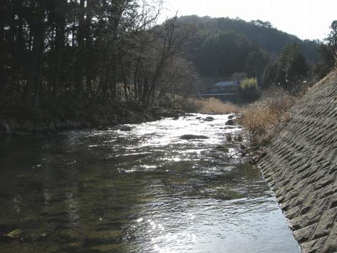

釣行日誌 故郷編
2008/3/16 叔父と早春を釣る
面会謝絶の札が下がった病室のドアを開けると、収（おさむ）叔父が苦しそうに全身を震わせながら呼吸していた。鼻には人工呼吸器の管が通され、腕には点滴の注射針が刺さっている。一年以上の闘病生活を送ってきた叔父の体はやせ細り、病室には叔父の荒い呼吸の音と、医療機器の電子音だけが聞こえていた。
兄から電話が入り、叔父が亡くなったことを知らされたのは、僕と父が病室に収叔父を見舞ってから４時間後のことだった。
三月のとある日曜日、午前八時、朝食後のコーヒーを飲んでいると、豊（ゆたか）叔父から携帯に電話が入る。
「おーい、今駐車場まで来たぞ」
いそいそと釣り具の詰まったトートバッグを抱え、ロッドを大事に持って玄関へと向かう。駐車場で叔父の車を見つけ、あいさつをして荷物を入れるためにトランクを開けてもらう。
「あれ？ おじさん、ルアーの竿が無いじゃん？」
「ああ、盗難防止用に、外から見えないようマットの下の収納スペースに入れてある」
「なるほどね。それはいい考えだね」
ということで、久しぶりというか、生まれて初めて豊叔父と釣りに行くことになった。豊叔父は、父の一番下の弟で、父とは２３歳も歳が離れており、僕の一番上の兄と二つしか違わないので、僕ら兄弟は豊叔父のことをほとんど兄貴の様な存在として育ってきた。一月に亡くなった収叔父は、八人兄弟の長男である父の、四番目の弟であった。
豊叔父と四方山話をしながら国道を一路北へと向かう。目指すはダム湖に入り込んでいる支流の一つである。豊叔父は昨年、持病の糖尿病と高血圧が悪化し、心臓のバイパス手術を二回受けている。そのため、今でもニトロの錠剤を常時携行しているのだ。河原で倒れられても困るので、叔父にニトロのありかを聞いておく。胸のポケットの財布の中にしまってあるとのことだった。収叔父をガンで亡くしてから、身近な人が逝ってしまうことに、しんしんと濡れたシャツを着るような恐怖を覚え、豊叔父とも魚釣りに行っておいたほうが良いのではないかという想いが僕の胸の中を占めていたのだ。
今日は最初、本流下流域のサツキマスを狙う予定だったのだが、あいにくと堤防道路を使用してマラソン大会が行われるということで、急遽予定を変更して山岳渓流のアマゴをルアーで狙うことにしたのだ。
遙か二時間のドライブの後、県境を越えて、目指すダム湖畔に着いた。休憩所で少し休んだ後、くねくねと湖畔道路をダムサイト方面へ向かう。湖畔の桜のつぼみはまだ小さいが、日差しは確実に強くなってきている。途中、バスを狙ってルアーを投げている青年が湖畔に立っていた。
湖畔道路を右に折れて、支流に沿った細い道路を上がってゆく。途中、入漁券販売所の看板があったので、その店をのぞいてみたが誰も出てこない。釣りの監視員が来たら現場で券を買うことにして上流へと向かう。が、しかし、発電所の放水口を越えたらとたんに水量が少なくなった。
「叔父さん、ちょっと水が少ないんじゃない？」
「ああ、以前来た時はもっとあったんだがなぁ.....」
頼りなげな返答である。今日の釣りは全面的に叔父の案内に頼っているので、連れて行ってもらうところで釣るしかない。車を停めるスペースがあったので、そこに車を停めて川の状態を偵察する。
「おお、ここだここだ。ここで前にも車停めて弁当食べたんだ」
叔父が示すポイントは、たしかに魅力的な滝壺であったが、いかんせん有望なポイントはそこしかない。他の区間には水量が無く、ルアーを引っ張るにはちょっと寂しい渓相である。仕方なくその川をあきらめ、今度は山の中の道を突っ切って、地元の渓流に戻ることにした。
再び二時間のドライブの後、叔父が下見をしておいたという渓流にやってきた。水量もあり、水の色も申し分ない。金曜日に降った雨のおかげで少し増水しているようだ。ルアー釣りにとってはもってこいの水況である。右岸沿いの農道を走って行くと、細長い淵があり、その横に車を停められるスペースがあったので、そこから入渓することに決めた。叔父は小型のミノーを、僕は富士宮の釣具店で見つけた懐かしのメップス黒地に蛍光緑のスポットのあるスピナーを結ぶ。叔父のラインは４ポンド、僕のは本栖湖以来の６ポンドである。
ウェーディングシューズを履いてドタドタと河原に降りてゆき、叔父と二人で釣り始める。淵の頭、流れ込み、淵のど真ん中、引けども引けどもアタリは無い。メップスは魅力的に回転しているのだけれど、その後ろを魚影が付いて来ない。
「こりゃぁ、おらんねぇ！」
「ああ、居そうもないなぁ」
ようしそれじゃぁもうちょっと上へ行くか、ということで再び車に乗って上流へと進む。豊叔父の釣りは Run & Gun スタイルであるらしい。１キロほど上がると、ログハウス風の別荘の下に、低い堰堤が作られているポイントがあった。堰堤の落ち込みにはそれらしい淵ができている。
「ようし、ここをやろう！」
また二人で車を降りて、河原へと土手をそろりそろりと水辺に近づく。叔父は堰堤のすぐ横から。僕は下手に回り、対岸の落ち込みを攻める。ここに居なけりゃどこに居る、というようなポイントであるが、落ち込みからは魚の反応は無かった。水温を測ると14℃であり、まずまずいい温度である。
叔父は、堰堤のコンクリートの上に登り、上流の溜まりを狙ってミノーを引いている。すると、何か反応があったらしく、慌ててこちらを振り向き、両手を40cmぐらいに広げてニタリと笑った。こちらも慌てて堰堤の上に登って叔父に近づいてゆくと、叔父は、
「ニゴイだった」
と笑った。
ニゴイが出るようじゃぁちょっと下流すぎないか？ ということで、再び車に乗り上流を目指す。しかし、川沿いに走っているうちに流れはどんどん細くなり、ついにダム下まで来てしまった。
「ようし、この川は釣れん。別の川に行こう」
叔父は、早々とこの里川に見切りを付け、別の川へと僕を誘った。
それから約２時間のドライブの後、訪れたのは別の県境に近い高原の川である。道の端にはまだ雪が残っている。これは寒そうだなと思って見ていると、叔父は堤防道路の空き地に車を停め、
「この下の堰堤で大岩魚を釣ったんだ」
と言う。またまた車を降りてロッドを取りだし、すぐ下の堰堤を狙う。
「あそこの落ち込みの白泡の中に居るぞ」
とアドバイスをくれ、叔父は上流へと向かった。僕は、一度、堰堤の下流へ回り、そこから順々にポイントを攻めて、叔父の勧めてくれた落ち込みを狙おうと、堤防道路に沿って下流へ歩いていった。ちょうど良いところに河原に降りる階段があったので、そこから水辺に降りた。水の中に立ち込むと、さすがに水温は低く、11℃しかない。これはちょっときびしいかなと思ったが、流心の深み、柳の根元、大石の際などをじっくり攻めてみた。徐々に堰堤へと迫りつつ、スピナーを投げては引き、投げては引く。魚影は無い。さていよいよ落ち込みの白泡だなと思って上流を見ると、なんということだ、堰堤の魚道を降りてきた叔父がすでに釣っているではないか！（笑） これはやられたわい.....と思って見ていると、叔父の投げるミノーは実に魅力的に身を震わせて水中を泳いでいるが、大岩魚の姿は見えない。しつこくしつこく叔父は粘るが、いっこうに魚の気配は無い。

とうとう叔父はあきらめたらしく、手招きで、上流へ行こうと僕を誘う。上流は緩やかな瀬になっており、僕の投げるスピナーも良いところを流れているなと思うがやっぱり魚影は無い。逆光の中、ひたすらにルアーを引く。

そのうちに、堤防の上から叔父の声がして、さらに上流に行こうと誘った。僕はいったん下流の階段まで戻ろうと、下流側に向きを変え、歩き始めた途端にバランスを失って仰向けに転んでしまった。せいぜい膝くらいのあまり深くは無いところだったが、右手をついてもすべってしまって体勢を立て直すことができず、ウェーダーの中に水が入ってしまった。右手は肩から下がずぶ濡れになってしまい、あまりの冷たさに体中がガクガクと震えてきた。それでもなんとか立ち上がり、急いで階段を上がり、叔父を呼んだ。幸い、リュックに着替えを入れておいたので、堤防道路でストリップをする羽目になったけれど、パンツまでびしょ濡れで帰ることは避けられた。
「これじゃぁ潮時かな。これで今日はやめにするか」
叔父はそう言って、ロッドを仕舞い始めた。僕もいささか戦意を喪失していたので、着替えてから再び釣る気にはなれなかったので、安心して、
「そうだね、今日は帰ろうか」
と答えた。
300km近く運転したにもかかわらず、帰り道も、叔父はいささかも疲れたそぶりを見せず、さらに回り道をして、別の川に立ち寄り、僕にいろんな所のポイントを教えてくれた。ここの橋の下は夕方、暗くなりかけた頃にちょいと立ち寄って河原へ降りられるから、帰り道に時間があったら覗いてみると良いなどと丁寧に教えてくれた。そんな豊叔父を見ていると、
『ああ、この人はまだ大丈夫だわ』
と、安心感がじわりと広がってきた。
帰路、大川のサツキマスのポイントをこんどは僕が説明しながら堤防道路をドライブしてきた。遠くの風車の向こうに日が沈み、暮れなずむあたりの空気には、確実に春の気配が漂っていた。
釣行日誌 故郷編 目次へ
サイトマップ
ホームへ
お問い合わせ